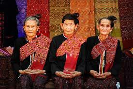

วิถีชีวิต : ชนเผ่าไทกะเลิง

ประวัติความเป็นมา : ชุมชนบ้านหนองสังข์ ต.หนองสังข์ อ.นาแก จ.นครพนม บรรพบุรุษมาจากเมืองเวียงอ่างคำ แขวงสะหวันนะเขต ประเทศลาว
จากนั้นข้ามฝั่งโขงมาตั้งบ้านอยู่ที่บ้านหนองสังข์ อ.ดอนตาล จ.มุกดาหาร และอพยพลงเรือหาปลาลอยลำขึ้นมาตามลำน้ำโขงพบลำน้ำก่ำที่ไหลมาจากหนองหาร จ.สกลนคร และได้พายเรือขึ้นไปเรื่อยๆ
พบน้ำหนองสังข์ติดกันกับลำน้ำก่ำมีพื้นที่พันกว่าไร่ จึงสร้างบ้านเรือน จาก 8 ครอบครัว จนถึงปัจจุบัน เกือบพันหลังคาเรือน ประชากรเกือบสี่พันคน
แหล่งท่องเที่ยวชุมชน และท่องเที่ยวเชิงวัฒนธรรม
- ดอนตาทอง
- ศูนย์ศิลปวัฒนธรรม
- วัดสระพังทอง
การประกอบอาชีพ
ส่วนมากแล้วไทยกะเลิงจะทำอาชีพ ทำนา เพาะปลูก และเลี้ยงสัตว์ และยังมีกลุ่มทอผ้า เช่นผ้าคราม ผ้าพันคอ ผ้าคลุมไหล่ ผ้าลายขิด ผ้าสิ้นหมี่ ผ้าย้อมสีสมุนไพรและไม้มงคล กลุ่มจักรสารจากไม้ไผ่
ความเชื่อ ประเพณี ความสำคัญ มกราคม ทำบุญตักบาตรวันขึ้นปีใหม่ กุมภาพันธ์ บุญเดือน 3 ทำขวัญข้าว เล้าข้าว
- ผู้สูงอายุ ขวัญควาย ขวัญยานพาหนะ - 14 กุมภาพันธ์ วันสืบสานวัฒนธรรมไทยกะเลิง
- บุญกองข้าว บุญข้าวจี่ วัดสระพังทอง และวัดศรีเจริญสุข
- เลี้ยงปู่ตา มีนาคม บุญพระเวสสันดร วัดสระพังทอง (ลงผีหมอเหยา) เมษายน ประเพณีสงกรานต์ วันผู้สูงอายุ ประเพณีบุญพระเวสสันดร วัดศรีเจริญสุข
พฤษภาคม พิธีสูตรขวัญ ผูกข้อมือพระภิกษุ วันแรกนาขวัญ มิถุนายน บุญชำระบ้าน กรกฎาคม แห่เทียนพรรษา หมู่บ้านศีล 5 หมู่บ้านศีล 8 สิงหาคม บุญข้าวประดับดิน
กันยายน บุญข้าวสาก บุญประเพณีการแข่งขันเรือยาม ตุลาคม บุญออกพรรษา พฤศจิกายน บุญกฐินสามัคคีชุมชน ประเพณีลอยกระทง ธันวาคม ส่งท้ายปีเก่า